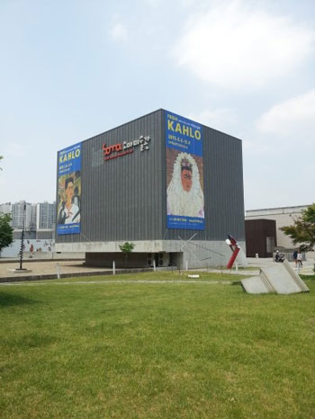
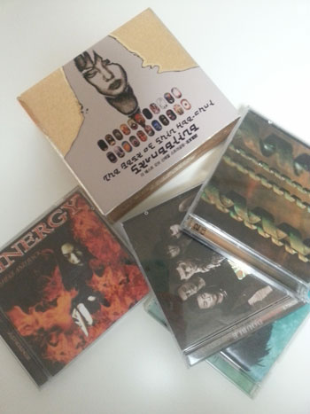

구입은 5월초에 했는데 어제 개시했당
소마미술관 프리다 칼로전 첫날 보고 옴 :)
출발전 엄마님께 사진찍어달라고 했는데
6장 모두 눈감고있다;; 이정도면 이것도 능력 ㅋㅋㅋㅋ
치마길이가 살짝 짧아서 행동을 조신(...)하게 해야함;;
여름보다는 가을겨울 레깅스+닥터마틴 조합이 더 취향일듯
이날 신은건 하얀색 아디다스 운동화 ^^;;
가방은 MM6
+치마길이가 촘 짧은것 같다는 나의 물음에
뭘 이정도 가지고 짧다고 그러냐는 김여사님
언제나 패숑에 관해서는 저보다 한발 더 나아가십니다 ㅋㅋㅋ
아 그나저나 갑자기 이나이 먹어서 왤케 세일러풍이 좋은거냐//
저거보다 좀더 길이도 길고 레트로 스타일로 빨강색 하나 더 사고싶당//

첫날 잽싸게 보고왔습니다 :)
사람이 많은거 같으면서도 뒤로 갈수록 한산해지는
생각보다 엄청 붐비지는 않았어요 ^^
소마미술관 자체가 느므 오랜만이라 반가웠음//
설레설레 미술관 돌고 / 백화점, 서점 순회하고 책한권 사들고 집에 돌아옴 :)

동생곰네서 내 책이랑 시디를 좀 가져왔는데
무려 스키조와 신해철 베스트 앨범을 발견
쿠로유메와 루나시 그리고 시너지 (스피드메탈인데 보컬 여성분이 한국계라서 산걸로 기억)
우어;; 추억돋아 ㅋㅋㅋ
+
금요일날 버스에서 mp3를 또 떨궜는데 ㅜㅜ
헐렝한 가디건 주머니에 넣었다가 일어나면서 흘렸나봄;;;
버스 내리는 순간 깨달음 ㅜㅜ
이제 거진 모바일로 음악도 듣고 모든걸 해결하지만
음악만큼은 한손에 쏙 들어오고 / 스트랩으로 목에 걸수도 있고 /
주머니에 들어가는 사이즈가 있어야해서 ^^
또다시 인터넷을 뒤지기시작;;
그리고 sony면 한국이 더 가까운데 ㅡㅡ;; 왜 영국보다 비싸;;
29.99파운드 (한화 5만천원) 정도 하는게 한국 인터넷 뒤져보니
최저가가 7만5천원 정도 하더라; ㅜㅜ
이것조차 한쿡이 더 비싸다니이이이 ㅜㅜ
투덜거리고 있는와중 동생곰에 자기 안쓰는걸 하나 적선해줬음
만쉐// 돈굳었다 //ㅂ//
신나서 오늘 시디 리핑 새로하고 플레이 리스트 새로만들었당 홋홋
일케 잉여잉여한 일요일을 보냈습니다 ^^**
또다시 힘내서 로동!!